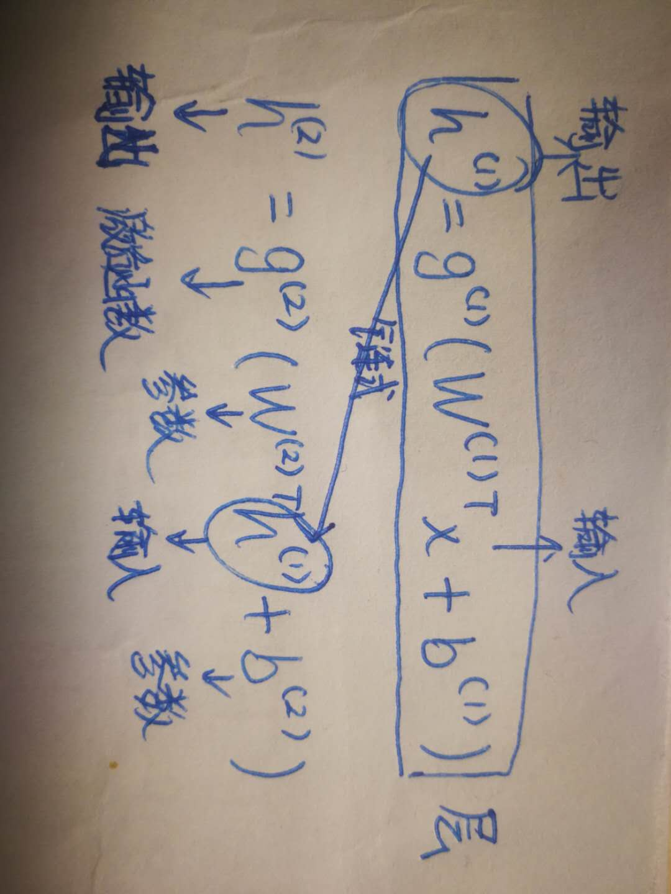

1. 大多数网络结构是这样的
2. 其它的网络
- 卷积神经网络，用于计算机视觉，见第9章
- 循环神经网络，用于序列处理，见第10章
- 一根主链 + 额外的架构特性
3. 6.4 架构设计
架构解决以下问题：
- 应该具有多少个单元
- 这些单元应该如何连接
3.1. 6.4.1 万能近似性质和深度

深层 VS 浅层：
优点：
- 每一层需要的神经元少
- 更容易泛化
缺点：
难以优化
3.2. 6.4.2 其他架构上的考虑
目前为止，我们都将神经网络描述成层的简单链式结构，主要的考虑因素是网络的深度和每层的宽度。 在实践中，神经网络显示出相当的多样性。
许多神经网络架构已经被开发用于特定的任务。 用于计算机视觉的卷积神经网络的特殊架构将在\chap?中介绍。 前馈网络也可以推广到用于序列处理的循环神经网络，但有它们自己的架构考虑，将在\chap?中介绍。
一般的，层并不一定都需要连接在一条链中，尽管这是最常见的做法。
[info]
书上翻译是“层不需要连接在链”，现在已经更新为“层并不一定都需要连接在一条链中”。
许多架构构建了一个主链，但随后又添加了额外的架构特性，例如从层到层或者更高层的跳跃连接。 这些跳跃连接使得梯度更容易从输出层流向更接近输入的层。
架构设计考虑的另外一个关键点是如何将层与层之间连接起来。 默认的神经网络层采用矩阵描述的线性变换，每个输入单元连接到每个输出单元。 在之后章节中的许多专用网络具有较少的连接，使得输入层中的每个单元仅连接到输出层单元的一个小子集。 这些用于减少连接数量的策略减少了参数的数量以及用于评估网络的计算量，但通常高度依赖于问题。 例如，\chap?描述的卷积神经网络使用对于计算机视觉问题非常有效的稀疏连接的专用模式。 在这一章中，很难对通用神经网络的架构给出更多具体的建议。 我们在随后的章节中介绍一些特殊的架构策略，可以在不同的领域工作良好。